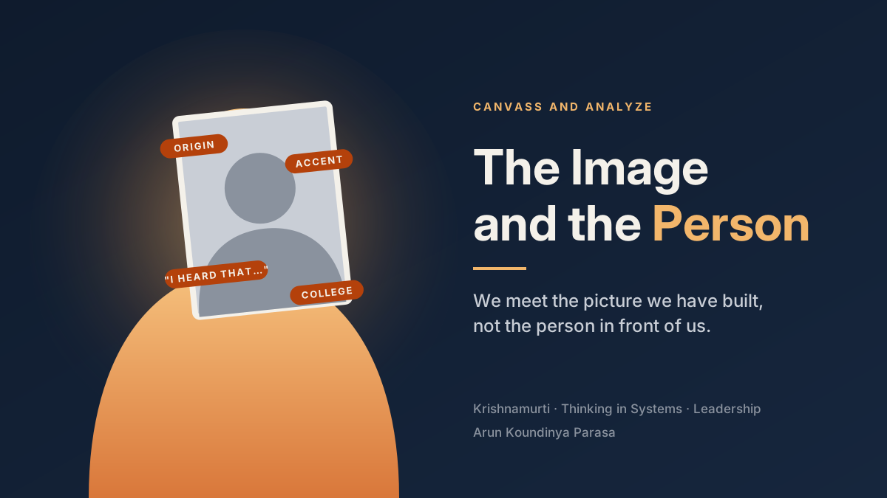

flowchart LR P1[Manager] --> I1["Image of the person<br/>(origin, accent, college,<br/>what others said)"] I1 --> D[Decisions:<br/>work, voice, growth] P2[The actual person] -. "rarely reaches" .-> P1
Part 4 of 4 · Thinking in Systems
THE IMAGE AND THE PERSON
What Jiddu Krishnamurti and systems thinking teach a leader about seeing people as they are
leadership
systems thinking
philosophy
management
What Jiddu Krishnamurti and systems thinking teach a leader about seeing people as they are

Listen to this post13 min · AI narration by Aria
This article is written for managers and leaders who build teams, assign work and decide who grows. My argument is as leaders, we often arrive at a person based on where they are from, rather than learning from who they are. The fix is not feedback from them. It is feedback to ourselves.
In my previous article, Thinking in Systems with AI, I argued that a system’s behavior comes largely from its own structure, not from the individuals inside it. While writing it, I kept coming back to one uncomfortable thought. Some of the most powerful structures in an organization are not on the org chart. They sit inside the manager’s head.
I have divided this article into four parts, followed by my learnings. The first part looks at what Jiddu Krishnamurti called the image. The second part tells a simple story of a manager and a new team member, in two scenarios. The third part looks at the image through the stock and flow lens of Donella Meadows. The fourth part asks whether we can really give someone our full attention, and what a self-feedback loop might look like.
1. The Image
Every one of us keeps a stock of assumptions about strangers. Their race, their country, their accent, their college, the company they came from, what a previous manager said about them. Most of the time we do not even notice we are doing it. It feels like experience, or even like wisdom.
Krishnamurti spoke about this again and again. He said that when we meet someone, we rarely meet the person. We meet the image we have built of them. And they, in turn, meet the image they have built of us. Over time, two people in a relationship are only relating through their images, and the living person quietly disappears behind the picture.
For an individual, this is a personal limitation. For a leader, it is something more. A manager’s image of a person decides what work they get, which meetings they are invited to, whose ideas are heard, and who is considered for the next role. The image does not stay in the head. It becomes structure.
2. A Story of Two Scenarios
Let us test this with a simple example. Assume there is an analytics team in a large company. The team is led by a manager, Meera. She is good at her job, she cares about her team, and she is under the usual pressure to deliver.
A new analyst, Daniel, joins the team. He has moved from a different country and from a much smaller company. Before he even joins, a peer tells Meera, in passing: “People from that background are good with code, but don’t expect them to handle business conversations.” Meera does not think of herself as biased. She simply files the comment away.
In his first week, Daniel is quiet in meetings. His accent is different, and he takes a moment before answering. Meera notices.
Let us consider two scenarios.
2.1. Scenario 1: The image decides
In the first scenario, the image does the work. Meera thinks Daniel needs time to settle, so she gives him the safe tasks: report refreshes, data pulls, ticket fixes. She keeps him out of the stakeholder meetings so he is not “put on the spot.” All of this feels kind, even protective.
Daniel, meanwhile, gets the work that teaches him the least and shows him the least. He has no context on why any of it matters. He becomes quieter, because there is little to say about a report refresh. In the quarterly review, Meera notes that Daniel is “reliable, but not yet ready for business-facing work.”
Her image has been confirmed. But notice what happened. The image created the very evidence that confirmed it.
flowchart LR A["Image:<br/>not business-facing"] --> B[Given safe,<br/>low-context work] B --> C[Little visibility,<br/>little to say] C --> D[Stays quiet] D --> E["'See, I was right'"] E --> A style A fill:#fdecea,stroke:#c0392b
Psychologists have a name for this. Robert Rosenthal’s work on expectations showed that what a teacher expects from a student can shape how the student actually performs. In systems language, this is a reinforcing loop, and it works just as well in the wrong direction.
2.2. Scenario 2: The manager catches the image
In the second scenario, everything is the same until one small moment. In Daniel’s first week, Meera catches herself thinking, “He’s quiet, he’s probably not comfortable with business conversations.” And she notices that she has not actually seen him in a single business conversation. The conclusion came from a comment and an accent, not from Daniel.
So she does something very simple. In a one-on-one, she asks him how he would approach a problem the team is stuck on: why a set of customers stopped responding to a campaign.
Daniel pauses, as he always does, and then talks for ten minutes. In his previous company, there was no separate business team. He sat with the sales head every week and built the analysis with him, not for him. He has more stakeholder experience than half the team. He was quiet in meetings because he was still learning the names, the acronyms and the politics, not because he had nothing to say.
Meera puts him on the campaign problem with a business partner. Within a quarter, he is one of the people stakeholders ask for by name.
flowchart LR
A[Impression<br/>forms] --> N{"Do I know this,<br/>or assume it?"}
N -- "assume" --> Q[Ask, observe,<br/>learn]
Q --> R[The real person<br/>shows up]
R --> W[Work matched<br/>to the person]
W --> G[Growth & trust]
G --> A
style N fill:#e8f5e9,stroke:#27ae60
Clarification: Meera did not need Daniel to give her feedback. Daniel would never have walked up to his new manager and said, “I think you have underestimated me.” Most people in his position would not. The correction had to come from Meera herself. This is the central point of this article. The feedback that matters here is not from the other person. It is to ourselves.
The difference between the two scenarios is not intelligence, kindness or even good intentions. Meera had all three in both scenarios. The difference was one moment of noticing.
3. The Image as a Stock and Flow
Let us look at Meera’s image of Daniel through the simple stock and flow lens of Donella Meadows. The stock here is the image, the accumulated belief about who a person is and what they can do. Like any stock, it fills through inflows and drains through outflows.
The inflows are easy to find. A peer’s comment. A first impression. A few observations that seem to fit. Generalizations about where someone is from, absorbed over a lifetime. These flow in quickly and almost without effort.
The outflow is genuine experience that contradicts the image. But here is the problem. When something does not fit, we tend to treat it as an exception. “He did well in that meeting, but that was a simple topic.” So the outflow is narrow, and the stock barely drains.
flowchart LR
B["Borrowed opinions"] --> IN{{Inflow}}
F["First impressions"] --> IN
S["Assumptions about<br/>where someone is from"] --> IN
IN --> ST[("The Image")]
ST --> OUT{{Outflow}}
OUT --> X["Contradicting experience<br/>(often discounted as<br/>'an exception')"]
Meadows also reminds us about delays. A first impression forms in minutes. A person’s real capability often shows up only after weeks or months, once they understand the context, the people and the unwritten rules. If the image sets before the delay is over, the decision has already been made with the wrong information. In Daniel’s case, the image was ready on day one. The real Daniel needed a few weeks to show up.
And this is why the image feels so solid. It is not a single thought. It is years of accumulation. Stocks change slowly by nature, and so it feels like knowledge rather than assumption.
4. Can We Give Someone 100% of Our Attention?
Honestly, no. We are human. We will form impressions, and some of them will come from places we are not proud of. Asking a manager to never have an image is like asking the body to never feel a change in temperature.
But the body does not stop at feeling. When we feel hot, we sweat. When we feel cold, we shiver. These are balancing loops, and they keep the system healthy despite disturbances. A resilient manager, like a resilient body, is not one who is never disturbed by an image. It is one who has a loop to recover from it.
Here, Krishnamurti would push back on the word “try.” For him, the effort to be unbiased can become just another image: “I am the fair and open-minded leader.” That image is as much a wall as the first one. His point was that the seeing itself is the action. When you actually notice, in the moment, “I have just decided something about this person before they finished speaking,” that noticing already loosens the image. He often described observing without evaluating as one of the highest forms of intelligence.
So the goal is not to reach 100% attention. The goal is to catch the image as it forms.
flowchart LR
ST[("The Image")] --> N[Notice the<br/>conclusion forming]
N --> O["Separate what I saw<br/>from what I concluded"]
O --> Q[Ask before deciding]
Q --> L[Learn the<br/>actual person]
L -. "drains" .-> ST
In practice, for a manager, this self-feedback loop can be quite simple:
- Notice the label as it forms. “He’s from there, so he’ll probably…” Catch the sentence halfway. There is no need to judge yourself. Just see it.
- Separate observation from conclusion. “She was quiet in the meeting” is an observation. “She is not confident” is a conclusion. Chris Argyris called this the ladder of inference. Most of the image lives in the jump between those two steps.
- Ask before concluding. One genuine question, “How would you approach this?”, gives the real person a chance to show up instead of the image.
- Treat borrowed images as hearsay. “I heard he is difficult” is someone else’s stock flowing into yours. Hold it lightly until you have seen it yourself.
- Respect the delay. Do not let an impression from week one decide the work in month three.
Meadows says that one of the highest leverage points in any system is the paradigm, the mindset out of which the whole system arises. Processes, rules and policies matter, but they sit lower. A diversity policy can change who gets hired. Only the manager’s way of seeing can change who gets heard.
5. My Learnings
As a Data Scientist, I find one irony hard to ignore. We would never build a model on a single feature. We would never predict a customer’s behavior only from their pin code, and if a junior analyst did that, we would send the model back. We segment, we test, we look for interactions, we validate on new data. And yet, in our own heads, we do exactly that with people. One variable, where someone is from, and the prediction is already made.
Having moved across organizations and countries over my career, I have been the new person in the room many times. I know how long it takes to learn the names, the acronyms and the way things are done, and how easily that period can be read as something it is not. I have also been the manager in the room, and I am sure I have held images of people that they never got the chance to correct.
What Krishnamurti and Meadows together taught me is that this is not mainly a question of being a good person. It is a question of seeing accurately. A leader who manages images instead of people makes worse decisions, not only unkind ones, because the information going into those decisions is wrong. In the language of my previous article, the manager’s mind is part of the team’s information flow, and if that flow is distorted, the whole system learns the wrong lesson.
So, as a manager, the question I am trying to ask myself is not “What do I know about this person?” It is “What have I actually seen, and what have I only assumed?” It is not about arriving at someone based on what others assume, or what I assume. It is about genuinely learning from them.
I will not always get this right. But like every feedback loop, this one grows stronger with use and weakens without it.
The image is built once, without effort. Seeing has to be exercised.
Enjoyed this?